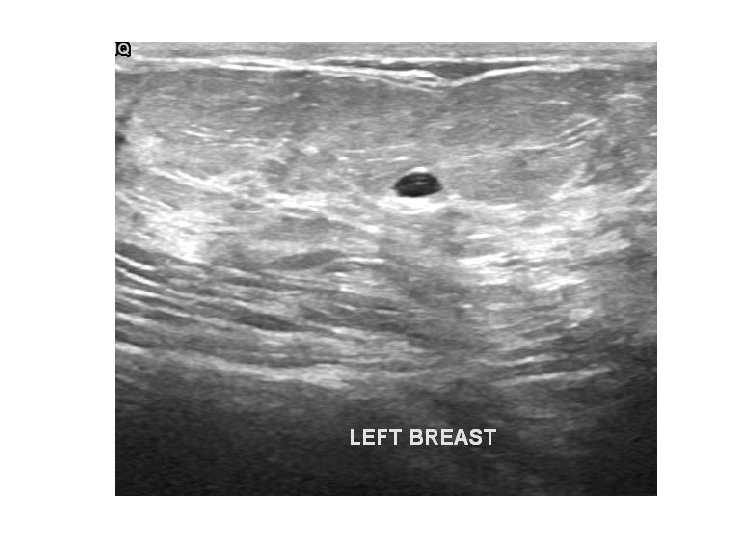
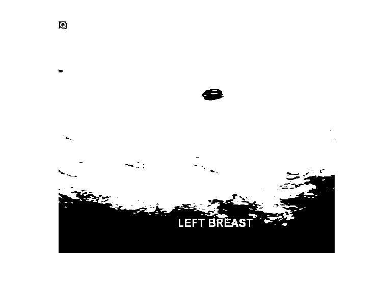
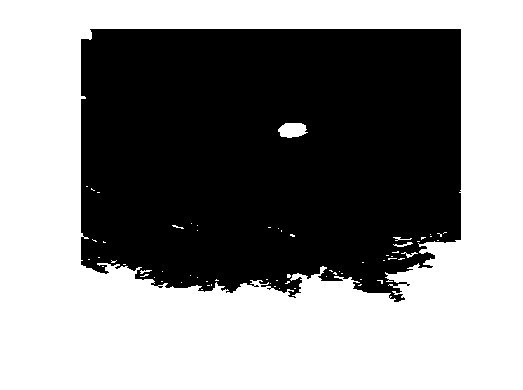
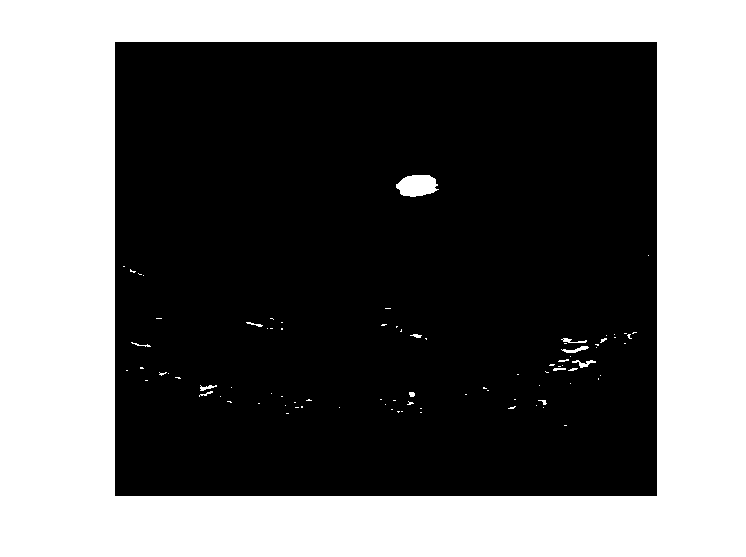
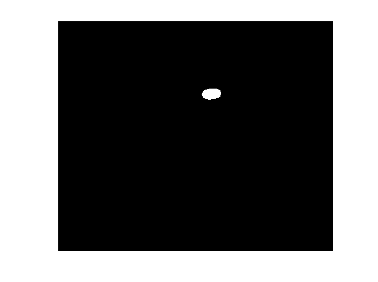

Estudante: André Alfonso Peixoto
GONZALEZ, R; WOODS, R; EDDINS, S. Digital Image Processing Using MATLAB 2. 2. ed. Gatesmark Publishing, 2009. Mathworks Stack Exchange Wikipedia
%Definir um conjunto de imagens %Tumor em images de ultrasonografia de mama OU outras imagens. %Segmente nas 3 images o tumor (bening) OU outra região. %Visualizar, comparar (com a resposta fornecida* mask) e comentar
pkg load signal; pkg load symbolic; pkg load image;
img = im2double(imread("benign (1).png")); figure; imshow(img); level = graythresh(img); BW = im2bw(img,0.3); figure; imshow(BW); bwAreaOpen = imcomplement(bwareaopen(BW,2000)); strelname = strel("disk",8,0); figure; imshow(bwAreaOpen,[]); bwBordas = imclearborder(bwAreaOpen, 8); figure; imshow(bwBordas); imTumor = imopen(bwBordas, strelname); % formatos de disco não implementados: error: strel: N for disk shape not yet implemented, use N of 0 figure; imshow(imTumor,[]);